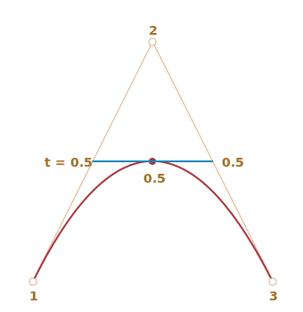

Bezier Curves digunakan didalam grafis komputer untuk menggambar bentuk, untuk animasi CSS dan di bagian lainnya.
Bezier Curves merupakan hal yang cukup simple, dan sangat layak untuk dipelajari dan akan terasa kenyamanan penggunaannya didalam grafis vektor dan animasi lanjutan.
Titik Kontrol
Sebuah bezier curve didefinisikan dengan menggunakan titik kontrol.
Kemungkinan akan terdapat 2, 3, 4 atau lebih.
For instance, two points curve: Untuk contoh ini menggunakan dua titik lengkungan.
Tiga titik lengkungan:
Empat titik lengkungan:
Jika kamu perhatikan secara seksama, kamu dapat melihat:
-
Titik tidak selalu sama dengan lengkungan. Itu merupakan hal yang normal, kita akan lihat nanti bagaimana lengkungan itu diciptakan.
-
Urutan lengkungan sama dengan titik dikurangi satu. Untuk dua titik kita mempunyai lengkungan linear (garis lurus), untuk tiga titik kita mempunyai ??? garis kuadratik (parabolik), untuk empat titik ??? cubic curve atau lengkungan kubik.
-
Sebuah lengkungan selalu didalam convex hull dari titik kontrol.


Karena properti terakhir, didalam komputer grafis memungkinkan untuk mengoptimalkan test titik potong. Jika Convex Hull tidak berpotongan maka lengkungannya juga tidak akan berpotongan. Jadi memeriksa potongan convex hull di awal akan memberikan hasil ???tanpa potongan??? dengan cepat. Memeriksa potongan convex hull lebih mudah dilakukan karena bentuknya kotak, segitiga dan lainnya (lihat contoh diatas), bentuk yang lebih simple daripada lengkungan.
Nilai utaman dari Bezier Curves untuk menggambar ??? dengan memindahkan titik lengkungan dengan cara yang jelas secara intuitif.
Cobalah memindahkan titik kontrol menggunakan mouse di contoh dibawah:
Seperti yang kamu perhatikan, lengkungannya meregang bersama dengan garis tangen 1 ??? 2 dan 3 ??? 4.
Setelah beberapa latihan nantinya akan jelas bagaimana caranya untuk memasangkan titik agar menjari lengkungan. dan menyambungkan beberapa lengkungan kita dapat membuat apapun.
Ini adalah beberapa contoh:


Algoritma De Casteljau???s
Terdapat sebuah rumus matematika untuk Bezier Curve, tapi kita akan membahasnya nanti karena De Casteljau???s algorithm identik dengan definisinya sendiri dan dapat dilihat jelas bagaimana membangunnya.
Pertama-tama kita lihat contoh 3 titik.
Ini adalah contoh dan penjelasannya akan mengikuti.
Titik kontrol (1, 2 dan 3) bisa dipindahkan dengan mouse. Tekan play untuk menjalankan.
Algoritma De Casteljau???s dengan 3 titik bezier curve
-
Letakan titik kontrol. Di dalam contoh diatas dinamai dengan:
1,2,3. -
Buat bagian diantara titik kontrol 1 ??? 2 ??? 3. Didalam contoh diatas adalah coklat.
-
Parameter
tbergerak dari0menuju1. Didalam contoh diatas langkah0.05digunakan: perulangannya bergerak menuju0, 0.05, 0.1, 0.15, ... 0.95, 1.Untuk setiap nilai dari
t:-
Untuk setiap bagian coklat kita bisa mengambil titik lokasi yang cocok untuk
tdari titik mulainya. Karena terdapat dua bagian, kita memiliki dua titik.Untuk contoh, untuk
t=0??? untuk kedua titik akan berada pada awal bagian, dan untukt=0.25??? pada 25% dari panjang bagian dari awal, untukt=0.5??? 50%(ditengah), untukt=1`` diakhir dari bagian. -
Sambungkan titiknya. Didalam gambar dibawah bagian yang tersambung di warnaibiru.
-
Untuk t=0.25 |
Untuk t=0.5 |
|---|---|
 |
 |
-
Sekarang pada bagian biru ambil titik yang proporsional yang sama dengan
t. Jadi, untukt=0.25(gambar kiri) kita mempunyai titik pada bagian akhir dari seperempat bagian, dan untukt=0.5(gambar kanan) ??? di bagian tengah. Pada gambar atas titik itu berada pada merah. -
Sebagaimana
tbergerak dari0ke1, setiap nilai daritmenambahkan titik pada lengkungannya. Satu kesatuan itu membentuk Bezier Curve. Yang berwarna merah dan parabolik pada gambar diatas.
Itu adalah proses dari 3 titik. Tapi sama dengan proses yang menggunakan 4 titik.
Contoh untuk 4 titik (titik dapat dipindahkan menggunakan mouse):
Algoritma untuk 4 titik:
- Sambungkan titik kontrol pada bagian: 1 ??? 2, 2 ??? 3, 3 ??? 4. Akan terdapat 3 bagian coklat.
- Untuk setiap
tdidalam interval dari0menuju1:- Kita ambil titik dari bagian yang memiliki cukup jarak dengan
tdi awal. Titik ini tersambung, jadi kita mempunyai dua bagian hijau. - Salah satu dari bagiannya akan mempunyai jarak yang cukup ke
t. Kita memiliki bagian biru. - Di bagian biru kita mengambil sebuah titik yang memiliki jarak proporsional ke
t. Di contoh diatas adalah merah.
- Kita ambil titik dari bagian yang memiliki cukup jarak dengan
- Titik-titik ini akan membentuk lengkungan.
Algoritmanya adalah perulangan dan bisa digenerelasikan dengan jumlah titik berapapun itu.
Diberikan titik kontrol dengan jumlah N:
- Kita sambungkan titik-titik nya untuk mendapatkan bagian awal N-1.
- Lalu untuk setiap
tdari0sampai1, kita bisa mengambil titik dari setiap bagian. Akan terdapat bagian N‑2. - Ulangi langkah 2 sampai hanya tersisa satu titik.
Titik-titik ini membangun lengkungannya.
Jalankan dan hentikan sementara untuk melihat bagian dan lengkungannya dibuat
Sebuah lengkungan yang terlihat seperti y=1/t:
Kontrol zig-zag pun dapat digunakan:
Membuat perulangan juga bisa:
Bezier Curve yang tidak rapih (bisa dibuat juga):
Jika ada sesuatu yang tidak jelas dengan deskripsi algoritmanya, perhatikan contoh yang tersedia untuk mengetahui bagaimana lengkungannya dibuat.
Sebagaimana algoritmanya adalah rekursif(berulang), kita bisa membangun Bezier Curves dengan urutan apapun, maka dari itu: gunakan 5, 6 atau lebih titik kontrol. Tapi pada penggunaannya terlalu banyak titik tidak akan benar-benar berguna. Biasanya kita akan menggunakan 2-3 titik, dan untuk garis yang lebih rumit kita hanya akan menempelkan beberapa lengkungan yang berbeda. Hal itu akan membuat pekerjaan menjadi lebih mudah dilakukan dan dihitung.
Terkadang kita memiliki hal lain: untuk menggambar lengkungan melewati beberapa titik, jadi semuanya digambar didalam satu lengkungan. hal tersebut dipanggil dengan interpolation,dan disini kita tidak akan mempelajarinya.
Terdapat beberapa rumus matematika seperti lengkungan, untuk contoh Lagrange polynomial. Didalam grafis komputer spline interpolation sering digunakan untuk membangun lengkungan yang halus dengan menyambungkan beberapa titik.
Matematikal
Sebuah Bezier Curve bisa di buat dengan menggunakan rumus matematika.
Seperti yang kita lihat ??? sebenarnya tidak perlu kita ketahui, kebanyakan orang membangunnya dengan menggerakan titik menggunakan mouse. Tapi jika kamu menyukai matematika, beginilah caranya.
Diberikan koordinat dari titik kontrol Pi: titik kontrol pertama memiliki koordinat P1 = (x1, y1), yang kedua P2 = (x2, y2), dan seterusnya, koordinat lengkungannya dejelaskan dengan persamaan yang bergantung pada parameter t dari bagian [0.1].
-
Rumus untuk lengkungan dengan 2 titik:
P = (1-t)P1 + tP2 -
Untuk 3 titik:
P = (1???t)2P1 + 2(1???t)tP2 + t2P3 -
Untuk 4 titik:
P = (1???t)3P1 + 3(1???t)2tP2 +3(1???t)t2P3 + t3P4
Ini adalah persamaan vektor. Dengan kata lain, kita bisa menyimpan x dan y daripada P untuk mendapatkan koordinat tertentu.
Untuk contoh, lengkungan dengan 3 titik dibangun dengan titik (x, y) dihitung dengan:
x = (1???t)2x1 + 2(1???t)tx2 + t2x3y = (1???t)2y1 + 2(1???t)ty2 + t2y3
Daripada x1, y1, x2, y2, x3, y3 kita harus memasukan koordinat dari 3 titik kontrol dan lalu selama t bergerak dari 0 menuju 1, untuk setiap nilai dari t kita harus memiliki (x, y) dari lengkungannya.
Contoh, jika titik kontrol adalah (0,0), (0,5, 1) dan (1, 0), persamaannya menjadi:
x = (1???t)2 _ 0 + 2(1???t)t _ 0.5 + t2 * 1 = (1-t)t + t2 = ty = (1???t)2 _ 0 + 2(1???t)t _ 1 + t2 * 0 = 2(1-t)t = ???2t2 + 2t
Sekarang selama t berjalan dari 0 menuju 1, nilai dari (x, y) untuk setiap t membentuk lengkungan untuk titik kontrolnya.
Ringkasan
Bezier Curves didefinisikan menggunakan titik kontrol.
Kita melihat dua definisi dari Bezier Curves:
- Menggunakan proses gambar: Algoritma De Casteljau???s.
- Menggunakan rumus matematika.
Properti yang bagus dari Bezier Curve:
Kita bisa membuat garis halus dengan sebuah mouse dengan menggerakan titik.
- Bentuk yang rumit bisa dibuat dengan beberapa Bezier Curve.
Penggunaan:
- Didalam grafis komputer, permodelan, vektor dan editor grafis. Fonts di kategorikan sebagai Bezier Curves. -Di dalam pembangunan website ??? untuk grafis didalam kanvas dan didalam format SVG. Untuk informasi, contoh yang ada diatas menggunakan format SVG. Contoh-contoh itu menggunakan satu dokumen SVG yang diberikan beberapa titik sebagai parameter. Kamu bisa melihat source nya di demo.svg.
- Dalam animasi CSS untuk menjelaskan path dan kecepatan dari animasi.
{kind=link}